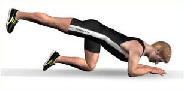

Drink approx. 1 litre of water for each hour of sport that you do. you are recommended to drink non-carbonated water
Drink approx. 1 litre of water for each hour of sport that you do. you are recommended to drink non-carbonated waterHere we give you important tips on performing your first exercises. Should it be the case that you are already regularly performing exercises, perhaps this helps as a reminder to maintain a good correct posture.
Drink approx. 1 litre of water for each hour of sport that you do. you are recommended to drink non-carbonated water
 There’s a simple rule: breathe out when you need strength and breathe in when you revert to the starting position. However, the most important thing is that you don’t stop breathing (we wish that we were entirely kidding here!).
There’s a simple rule: breathe out when you need strength and breathe in when you revert to the starting position. However, the most important thing is that you don’t stop breathing (we wish that we were entirely kidding here!).
In stretching exercises, it is important to come into the stretching position during the breathing-out phase. You can achieve this just that little bit further and deeper etc. in the breathing-out phase than in the breathing-in phase – try it out.
 Take care to ensure that your knee has a slight bend (i.e. is not standing dead straight), and is in a relaxed not rigid state; that way, you can spare your knee joints.
Take care to ensure that your knee has a slight bend (i.e. is not standing dead straight), and is in a relaxed not rigid state; that way, you can spare your knee joints.
Keep the upper body straight, make a motion with your back as if you were vertically drawing out your vertebrae(instead of compressing them), and then push your chest forward. Over the long-term you will notice as a result that your whole body posture will improve. Draw your shoulders low!
Your feet are standing beneath your hips, in a slightly opened position, and your knees are at all times slightly bent and are relaxed rather than rigid, thus sparing your knee joints.
Always make sure that your knees remain behind the tips of your toes, so as to minimise the pressure on the menisci and so that you can avoid injuries arising from repeating these exercises in the course of a longer period.
 Tense your stomach muscles, so that your lower back is always positioned on the mat. This prevents back pains and is sparing on your lower-back area.
This basic position is important for many exercises:
Position your knees below your hips and your elbows or hands below your shoulders. Keep your back straight and draw in your navel – also maintain this basic tension during the exercise.
In the case of exercises on the floor, a gymnastics mat is always recommended – this prevents unpleasant pressure points emerging during the exercise.